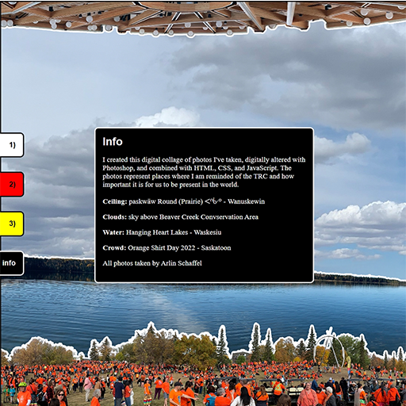
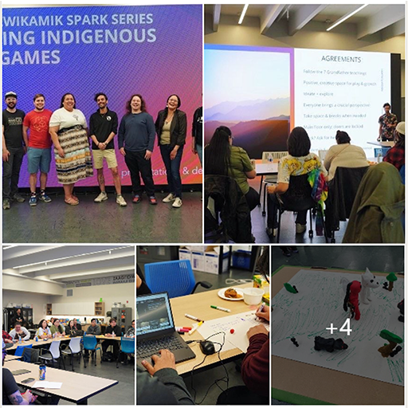

Indigenization & Reconciliation

The Indigenization and Reconciliation competency focuses on demonstrating knowledge of Indigenous content, incorporating Indigenous ways of knowing and doing within the learning environment, and committing to reconciliation and miyo wâhkôhtowin.

(Click to View)
LIFT-1004 Digital Collage
As part of LIFT-1004 Indigenization & Reconciliation in February 2024, I created a Digital Collage representing places where I am reminded of the truth and reconciliation.
The collage visually represents places, events, and community moments, grouding the learning in lived experience rather than abstract theory. The LIFT module reminded me to be critical of land acknowledgements, ensuring that they are informative and practical, and not performative. I make a point in my own land acknowledgements of giving something actionable, like supporting a specific local indigenous artist or business, or notifying students of an upcoming event.
I am committed to moving beyond awareness toward relationship-building and authentic curriculum integration.

(Click to View)
SIIT Innovation Jam
In May 2023, Tia Larocque-Graham invited me to be an industry expert for SIIT's innovation jam centered around Indigenous game development.
The event brought students together to explore game concepts grounded in Indigenous stories, teachings, and lived experience. Students designed from their own knowledge systems, while industry experts were present to mentor and support rather than direct.
Participating reinforced my commitment to collaboration, especially across educational spaces. Building connections with Indigenous-led institutions like SIIT creates opportunities for shared learning, mutual respect, and future partnerships.